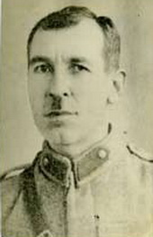

Ahmet Feyzi Kul [1898-1972]

Isparta'nýn Uluborlu ilçesinde 1898 senesinde dünyaya gelmiþtir. Nurlarla iþtigali sýralarýnda daha çok Ýzmir'e yakýn, Aydýn'a baðlý Ortaklar bucaðýnýn Çamlýk köyünde yaþamýþtýr. 1930'lu yýllarýn baþlarýnda Üstad Bediüzzaman'ý tanýmýþtýr. Üstad'ýna yazdýðý mektuba "Aydýn Müftüsü" diye imza atýnca 1935'teki Eskiþehir hapsinden kurtulmuþ, fakat daha sonraki Denizli ve Afyon hapislerinde yatmýþtýr.Afyon mahkemesinde bu asýrda zuhur eden Risale-i Nur'a ve müellifine iþaret eden, ayet ve hadislerden istihraç yapan "Maidetül-Kur'an" adlý eseri bizzat Bediüzzaman tarafýndan Týlsýmlar mecmuasýna zeyl olarak konulmuþtur. Fakat Afyon Mahkemesinde çok mevzuubahis edildiði için yine Üstad tarafýndan eserden çýkarýlmýþtýr. Afyon Mahkemesindeki þaþaalý müdafaasýnýn, mahkemenin seyrini deðiþtirdiði söylenmektedir.
Üstad Hazretleri ona "Risale-i Nur'un manevî avukatý" demiþtir. Ahmet Feyzi'nin, çok kuvvetli bir hitabet kabiliyeti vardýr. 1972'de Antalya'da vefat etmiþtir, kabri Çamlýkladýr.
Risale-i Nur'da....
Risale-i Nur'un avukatý ve Aydýn havalisinin Hasan Feyzi'si ve o civarýn bir Hüsrev'i kardeþimiz Ahmet Feyzi, üç seneden beri Sikke-i Tasdik-i Gaybî'nin Risale-i Nur'a verdiði yüzer iþaretle tasdiklerini, tam bir kat'î burhan olarak hem hadislerden, hem ayetlerden mana ve cifir muvafakatlarýyla Risale-i Nur'un þahs-ý manevîsini pek kuvvetli bir surette ispat ediyor. (Emirdað Lâhikasý-I)
Haber aldým ki, çok çalýþan, fakat ihtiyatsýz Ahmet Feyzi'nin "Maidetü'l-Kur'an" baþýnda malum mektubumu mahkeme heyeti bahane ederek..... (Þualar)

HATIRALAR
Risaleler çok zor þartlarda yazýldý
Ben altý eserin yazýlmasýna þahit oldum, o da iki hapishanede... Biri Denizli, diðeri Afyon hapsinde... Her iki hapishanede de o kadar takayyüd, yani bir kelime bile yazýlmamasý için þiddetli bir baský vardý. Ve hiçbir yazýnýn içeri girmesine, dýþarý çýkmasýna, kuþ uçmasýna imkân yoktu. Bu þartlar altýnda altý eser yazýldý. Bilhassa Meyve Risalesi... Meyve Risalesi bir þaheserdir... Denizli'de baþgardiyan elde edildi. Üstad ayrý, tek hücrede, biz de ayrý ayrý koðuþlardayýz. Ispartalýlar bir koðuþta, oraya gönderiyorlar hep. Kâðýt yok, bir þey yok, imkân yok... Mahkûmlar tabiî sigara içiyor. Paketlerin kâðýdýný atýyorlar. O kâðýtlar alýnýyor, üç satýr yazý yazýlýyor. Gardiyan, baþgardiyan 'Hafýz Ali!' diyor, Hafýz Ali çýkýyor, yazýyý alýyor. Üç satýr, ertesi gün beþ satýr daha... Meyve Risalesi böyle tamamlanýyor. Bugün Meyve Risalesi'ni okuduðunuz zaman, ondaki azamet-i ifade karþýsýnda insan donakalýr. Böyle yazýldý, bunu ben gördüm. Altý eser bu þekilde bütün imkânsýzlýklar, memnuiyetler içerisinde yazýldý. Dýþarýya çýkmasýna imkân ve ihtimal bile yok... Bu eserlerin hepsi de dýþarýya çýkýyor, dýþarýda neþrediliyor... Biz buna þahidiz. Hatta bir gün bir tek pusula yakalanmýþ, Afyon'da... Bu pusula için öyle tahkikat yaptýlar, o tahkikat yapýlýyorken, o bizim büyük Afyon müdafaasý ve daha neler dýþarýya çýktý... Onlara hiçbir þey olmadan dýþarýda da intiþar etti. Ve neþredilenlerden de bir nüsha, temyiz baþsavcýsýna verildi. Öyle olduðu hâlde, aðýr ve þiddetli hücumu olan bir müdafaa olmasýna raðmen baþ müdde-i umumî benim beraatimi talep etti! Bu harikuladedir, görülmemiþ bir þeydir...
Yüzlerce keramete þahit olmuþumdur
Ben Bediüzzaman Hazretlerinin yüzlerce kerametine þahit olmuþumdur. Fakat en küçük bir keramet bile zuhur etse, hemen, "Hizmetin kerametidir, Nur'un kerametidir, benimle alâkasý yok" derdi. Bir gün Emirdað'a gittim. Beni hemen içeri aldý. Biraz sohbetten sonra "Kardeþim! Sen bugün behemahal buradan git; zira buranýn kaymakamý çok münafýk, bir hadise çýkarma ihtimali var" dedi. Emri alýnca hemen çýktýk. Mehmet Çalýþkan'ýn dükkânýna vardýk. Onlar yemek hazýrlamýþlar. "Siz yemek hazýrlamýþsýnýz, ama ben emir aldým, vasýtaya bakýverin" dedim. Onlar "Ooo... Vasýta bir defa geliyor buraya, o da gitti. Senin fazla paran varsa, hususî bir taksi tutalým, seni gönderelim" dediler. Nerede Hacý Ahmet'te kav çakmak!
"Bugün burada mecburi kalýyorsun" dediler. "Aman!" dedim, "Duyarsa ne hâle gelirim sonra? Ona haber vermemek þartýyla..." Ýkindi oldu, camiye sapa yerlerden gittik ve geldik. Büyük bir camileri vardý. Mehmet Çalýþkan'ýn evine kapandýk. Orada misafir kalacaðýz, baþka yolu yok. Ertesi gün gidilecek. Akþam, Allah ne verdiyse yedik. Misafirler gelmeye baþladý. Hâkim, doktor gibi hep yüksek tabakadan insanlar, hepsi de müdakkik... Bana kabir suali sormaya baþladýlar. Bir fütuhat geldi, gece yarýsýna kadar, hiç aklýma gelmeyen þeyleri orada inayet-i Ýlâhî ile onlara söyledim. "Artýk bu gece tam doyduk, bütün müþküllerimiz halloldu" dediler. Gece yarýsý daðýldýlar. Biz de yatsýyý kýlýp yattýk.
Sabah namazýndan sonra gitmeye hazýrlanýrken Zübeyir geldi. "Kardeþim, Üstad Hazretleri sizi istiyor" dedi. "Eyvah, yandýk!" dedim. Mehmet Çalýþkan'a dönerek, "Kalk bakalým! Suç senin, beni göndermeyen sensin..." dedim. O da, "Sen korkma!" dedi. Ve Üstadýn yanýna gittik... Ben önünde diz çökerek oturdum; Mehmet Çalýþkan ayakta, sonra o da oturdu. Bize, "Niçin kaldýn, niye gitmedin?" gibi bir þey demedi. "Kardeþim! Bu gece kalmanýz çok isabetli oldu, çok isabetli oldu..." dedi. Sanki mübarek, gece konuþulanlarý aynen dinlemiþti. Yani o gece yapýlan sohbet, Üstad tarafýndan aynen telkin edildi, tasarruf edildi. Daha baþka neler söyledi, hatýrlamýyorum. Biz buna benzer daha neler gördük kardaþým! Ne hadiselere þahidiz... Üstadýn önünde gönlünden geçen bir þeyin cevabýný, daha aðzým açmadan almamak mümkün deðildi...
Bu hizmetin kerametidir, bize ait bir þey deðildir
Bir de Üstadýn yanýnda bir istinsah iþimiz oldu. Abdülmecit Efendi, Asâ-yý Musa'yý Arapçaya tercüme etmiþ. Üstad Hazretleri de Mehmet Feyzi Efendi'ye haber göndermiþ, fakat o da hastalýðýndan dolayý gelememiþ. Ben de o zaman Ankara'daydým. Ýstanbul'dan birisi geldi. "Üstadýn caný çok sýkýlýyor!" dedi. "Hayret! Ne var, niçin?" dedim. "Asâ-yý Musa'yý istinsah ettirecek. Mehmet Feyzi Efendi'ye haber göndermiþ, o da hastayým, demiþ. Arapçayý herkes yazamaz ki... Arapçanýn imlâsýna tam vâkýf olarak yazmak lâzým" dedi. Ben Ýstanbul'a gitmekten çekiniyordum. Ýstanbul'a gitmeye maddî gücüm de müsait deðildi. Düþündüm, kendime "Derhal gidip bu yazýyý yazacaksýn" dedim.
Ertesi gün Hüsnü ile beraber kendi paralarýmýzla otobüs biletlerini aldýk. Bizi uðurladýlar. Hüsnü bana dedi ki: "Aðabey, biz oraya gece yarýsý varacaðýz. Üstad'ýn yanýndaki kardeþler de evlerine gidecek. Bizi de Reþadiye Oteli'ne kimse almaz. Biz orada meydanda kalacaðýz!' dedi. Ben gayr-i ihtiyari, "Kardaþým! Merak etme, bizim buradan oraya gittiðimizi söylerler ona" dedim.
Þehzadebaþýndan geçerken Hüsnü, "Aðabey, kardeþler geçiyor!" dedi. Ben de "Ýn, onlarý çabuk yakala!" dedim. Arabadan indi ve onlarý yakaladý. Süleymaniye'deki medreseye gittik. Abdülmuhsin kardeþ gülmeye baþladý. 'Ne gülüyorsun?' dedim. O da, 'Sorma! Biz hiç bu yoldan geçmiyorduk, Þehzadebaþýndan... Hadi bugün de bu yoldan gidelim, dedik. Sonra daha garip bir þey var' dedi. Ben, 'Ne o?' dedim. Üstad Hazretleri bugün "Ekmek alýn bana" dedi. "Caným Üstadým, ekmeðimiz çok, sana bunun bir tanesi on gün yetiyor. Ekmeði aldýrýp da ne yapacaksýn?" dedik. "Yok, yok, alýn! Sizin aklýnýz ermez, misafir falan olur" dedi. Zorla bunlara üç tane ekmek aldýrmýþ. Ýstanbul'da o zaman ekmek vesikayla bile bulunmuyor... Ýmaretten talebelerden alýyorlar. Neyse yumurta filan yaptýlar, karnýmýzý doyurduk.
Ertesi sabah otele gittik. Üstad Hazretlerine benim geldiðimi haber verdiler, kabul etti. Abdülmuhsin, "Efendim, dün bize ekmeði boþuna aldýrmamýþsýnýz!" dedi. Üstad da, "Sus, bir þey yok onda. O, hizmetin kerametidir, bize ait bir þey deðil" diyerek adeta onu azarladý.
Þaþaalý müdafaasý, mahkeme safahatýný birden deðiþtiriverdi
Ahmet Feyzi Aðabey, Denizli ve Afyon hapsine girenlerden... Afyon'daki o þaþaalý müdafaasý sebebiyle, heyet kararýyla, vesaiyeyi o yerine getirecek endiþesiyle 18 ay aðýr cezayý ona verdiler.
Ahmet Feyzi Aðabey mahkemeden sonra üç-dört defa daha Üstad'ýn yanýna gelmiþti. Ýþte son geldiðinde ben de Üstadýmýzýn yanýnda idim. Üstad'ýmýz, "Kardeþim! Ben 30 senedir Ege'ye bakýyordum, bana mukabil bir ruh görüyordum, o da sensin. Hatta ben Ege Bölgesi'ne gidecektim, sen varsýn diye gitmedim" manasýnda bazý þeyler söyledi.
1954'te Tahiri, Zübeyir, Ceylan, Bayram, Üstad'ýn yanýnda iken, Üstad, "Afyon hapsinde talebelerin bazý münakaþalarýndan çok sýkýldým, Tahiri ve Ahmet Feyzi hiç sarsýlmadýlar, hiç münakaþaya girmediler" dedi. Ahmet Feyzi Aðabey Maidetü'l Kur'an'ý, Bazýlarýnýn, "Sen bunu yazdýn, onun yüzünden mahkeme uzadý!" diye Ahmet Feyzi Aðabeye karþý tavýrlarý olunca Ahmet Feyzi Aðabey hiç sarsýlmamýþtý, çok sadýktý. Hatta mahkemeden sonra da 101 sayfa temyize müdafaa yazmýþtý. Mesela Ceylan öyle müdafaalar yazmazdý, hazýr müdafaalardan okurdu.
Afyon'da ilk mahkeme 17-18 Haziran'da oluyor. Birinci mahkeme normal geçiyor, ama ikinci gün öðleye kadar hâkim, 'Maidetü'l-Kur'an' sebebiyle sýkýþtýrmaya baþlýyor, bastýn mý, daðýttýn mý diye. Ýþte mahkemede çok sýkýntýlý bir durum oluyor. Hâkim devamlý soruyor, sýkýþtýrýyor. O esnada Ahmet Feyzi Aðabey de revirde idi. Bunu duyunca bir müdafaa hazýrladý ve 'Ben mahkeme daðýlmadan gideyim' deyip hemen mahkemeye gitti, müdafaayý ibraz etti. Hâkimler bu müdafaayý dinledikten sonra akþam üzeri birden mahkemenin safahatý deðiþti. Hakimlerdeki þiddet ve hiddet birden sönüverdi. (Nakleden Mustafa Sungur)
Risale-i Nur'un manevî avukatý
Afyon Cezaevi'nde iken, biz temyiz lâyihasýný yazýyorduk. Ben temize çekiyorum, Zübeyir Aðabey de dilekçe haline getiriyordu. Yüz bir sayfa oldu... Bir gün Üstad'ýmýz elini çýkardý, koðuþta "havada yazý yazma iþareti" yaptý. Ben de Ahmet Feyzi Aðabeye "Üstad böyle böyle iþaret yaptý" dedim. Ahmet Feyzi Aðabey de "Ýþte Üstad devam edin diyor caným" dedi. Bir müddet sonra ikinci koðuþta bulunan Zübeyir Aðabey, Üstad'ýn yanýna gitti. Üstad sordu, 'Ne yapýyorsunuz?'. Zübeyir Aðabey "Müdafaa yazýyoruz Üstadým" deyince Üstad yüzünü buruþturdu. "Demek ki ben Zübeyir'i anlayamamýþým, ben sizi Risale-i Nur yazýyor zannediyordum, demek ki siz müdafaa yazýyordunuz" dedi. Feyzi Aðabey de müdafaa yazýyor heyecanla. Orada masa filan yok, ranzalar da yok. Namaz kýldýðýmýz tahta var, onda yazýyor müdafaalarý.
Zübeyir Aðabey, Üstad'ýn yanýndan geldiði vakit, "Feyzi Aðabey, sen beni aldatmýþsýn" dedi. Ahmet Feyzi Aðabey her þeyi býraktý, yataðýný serdi, yattý. Bir gün yattý, iki gün yattý... Sonra, "Üstad'ým! Herkes seni inkâr edecek, sen de onlarý tasdik edeceksin, illâ bu Ahmet Feyzi senin son memur-u Rabbani olduðunu dünyaya duyuracak" diye bir pusula yazýp gönderdi Üstad'a. Üstad, Ahmet Feyzi Aðabeyi çaðýrdý. Üstad'ýn odasý büyük, berber çaðýrdý, týraþ olacak. Ahmet Feyzi Aðabeyi de, "Gel benim Maidetü'l-Kur'an sahibi talebem!" diyerek çaðýrýyor. Ahmet Feyzi Aðabey "O zaman Üstad baþýný göðsüme koydu, öyle týraþ oldu. Bütün çýbanlarým iyileþti" demiþti. Üstad, gönlünü almýþtý... Üstad kendisine "Risale-i Nur'un manevî avukatý" derdi." (Nakleden Mustafa Sungur)